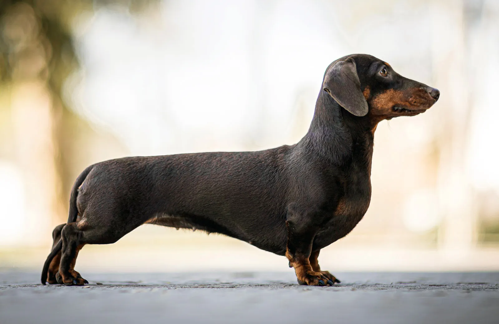

Man's Best Friend
Through the ages, people have claimed dogs as one of their closest, and best, companions. Of all the domesticated animals, dogs serve the widest array of roles: protector, helper, lifesaver, and companion. Dogs are incredible friends to people, and they`ve been companions through centuries. The relationship between dogs and people is deep and old. Dogs and people began living together 15,000 years ago when dogs followed people`s migration throughout East Asia. The connection was natural because both people and dogs are social beings. Neither can thrive when alone, and both benefit mentally (and often physically) from strong social bonds. Though domestic dogs share 99% of their DNA with wolves, dogs exude warmth to other dogs and humans that contrasts greatly with a wolf`s skeptical and defensive reaction to others. Dogs are social pack animals who thrive off of attention and affection, making them a prime candidate for a person`s best friend. Since dogs have been domesticated to a point where they need us to survive, and we tend to find that we need them almost as much, people and dogs developed a symbiotic relationship. Most dog owners will tell you that their dog is a family member. And having a faithful dog at home gives us a listening ear, a warm paw to hold, and even strong legs to run beside.
Some pictures of cute dogs
-

Dachund
-

French Bulldog
-

German Sheperd
-

Golden Retriever
-
Havanese
-

Pomeranian
-

Samoyed
-
Shih Tzu